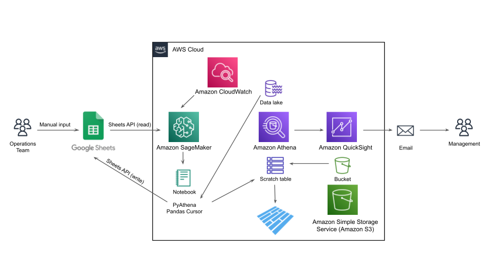

Case study · Data engineering
The spreadsheet that joined the data lake
The operations team resolved merchant and payor issues daily and tracked all of it in a Google Sheet — the only record of outreach, cut off from the platform. Instead of forcing ops into a new tool, this pipeline made the sheet a governed citizen of the lake: enriched on a schedule, persisted to Parquet, reported in QuickSight.
Architecture
One loop, six stages

The design constraint that matters: the ops team never changes tools. The sheet stays their working surface. The pipeline reads it, fills in what the lake knows, writes the context back into their columns, and appends the curated records to a Parquet table where QuickSight and management reporting live.
The pipeline
Stage by stage
1 — Extract: the sheet, through the front door
OAuth 2.0 with a cached refresh token keeps the daily scheduled run non-interactive after a one-time consent. The working range comes back as a DataFrame with the header row promoted.
sheets_client.read_sheet
result = (
service.spreadsheets()
.values()
.get(spreadsheetId=sheet_id, range=sheet_range)
.execute()
)
values = result.get("values", [])
df = pd.DataFrame(values[1:], columns=values[0])
2 — Enrich: targeted Athena lookups, batched by design
Only rows missing context trigger queries. Their keys are chunked into bounded IN-lists before interpolation — Athena caps query-string size, and unbounded lists are how daily jobs die on month-end volume. Five lookup results (transactions, payor details, success KPIs, contacts, merchant details) merge onto the base frame by record_id.
lake_enrichment: batching + merge
def batched(keys, size=BATCH_SIZE):
for start in range(0, len(keys), size):
yield keys[start : start + size]
frames = [base] + [f for f in lookups if not f.empty]
enriched = reduce(
lambda left, right: pd.merge(left, right, on=["record_id"], how="left"),
frames,
)
3 — Write back: the ops team sees the answers appear
Enriched columns land back in the sheet via clear-then-append against the working range — the manual lookup queries analysts used to run on request simply stopped existing.
4 — Persist: bootstrap once, append forever
A one-time DDL sequence registers the schema as an external table over a seed CSV, then converts it to a SNAPPY-compressed Parquet CTAS table — decoupling the curated dataset from the seed file and cutting Athena scan cost. Daily runs append new records only, keyed on record identity + contact date, so a rerun cannot double-count an outreach.
sql: Parquet CTAS + idempotent append
CREATE TABLE IF NOT EXISTS lake.ops_merchant_contact_info WITH (format = 'Parquet', parquet_compression = 'SNAPPY') AS SELECT * FROM lake.ops_merchant_contact_seed; INSERT INTO lake.ops_merchant_contact_info SELECT s.* FROM lake.ops_merchant_contact_staging s LEFT JOIN lake.ops_merchant_contact_info t ON t.merchant_id = s.merchant_id AND t.last_contact_date = s.last_contact_date WHERE t.merchant_id IS NULL;
5 — Serve: reporting that sends itself
QuickSight reads the Parquet table for the management dashboard; KPI threshold alerts and a scheduled mail-out replaced the ad-hoc status requests.
6 — Orchestrate: a cron, honestly
An EventBridge cron triggers the SageMaker notebook job daily, with failures logged in full. A notebook on a cron is the right prototype and the wrong endgame — the production path is a containerized job on Airflow/MWAA, and that migration is stated in the repo rather than hand-waved.
Design decisions
| Decision | Why |
|---|---|
| Parquet CTAS over external CSV | Columnar + SNAPPY cuts scan cost; the table stops depending on a bucket object someone can delete. |
| bounded IN-list batching | Athena query strings have hard size limits; chunking keys keeps month-end volume from killing the run. |
| append keyed on id + date | Idempotency by construction — reruns are safe, no dedup cleanup jobs later. |
| token cache outside the repo | One-time consent, then non-interactive daily auth; production home is Secrets Manager. |
| sheet stays the UI | Zero adoption cost. The pipeline adapts to the team, not the other way around. |
Source. Sanitized code (Sheets OAuth client, batched enrichment, daily pipeline), the full DDL sequence, and the architecture diagram are on GitHub: operations-analytics/sheets-to-lake-reverse-etl